Latest
version 1.1.19.0. It can be downloaded from here

This Expo IDE is to help Expo developers to build mobile apps faster. The IDE is built for Windows users using Visual Studio C# Development tool and made possible by the Chromium open source project.
Installation steps:
1. Download and install expo-ide-installer.exe .
2. Follow the steps as directed in the setup wizard.
3. During setup you will be asked if you want to install Microsoft Edge WebView2 Runtime package. You either install WebView2 via this wizard or you download the latest:
Evergreen WebView2 Runtime Installer
(MicrosoftEdgeWebView2RuntimeInstallerX64.exe) from microsoft website.
4. Update Microsoft Edge to latest vertion. To update it: Microsoft Edge Help-> About-> Update.
4. Restart your PC if you are asked to do so by the setup wizard.
What can Expo IDE do?:
1. Opens cmd, emulator and visual studio code external programs by one click.
2. Run hot commands like expo start, Init project, npm install etc. by button click.
3. Save actions and results for each session for history purpose.
4. Create and start Android Emulators without opening Android Studio.
5. Opens Metro Bundler internally or externally after expo start command.
Added features in version 1.1.x.x:
6. Type any commands via input text box.
7. IntelliSense (code-completion) auto complete input commands plus remembering new executed commands.
8. Edit auto complete suggestions manually.
9. Opens visual studio code internally.
10. All Expo developer work is done in one place via this application.
11. Will notify developer about new released Expo updates and allow him to install updates by one click.
12. Fixed various bugs and performance issues.
Expo IDE prerequisites:
· Expo version 3.x.x or higher.
· Node.js.
· Npm.
· Yarn.
· Git.
· Android Studio to use emulators.
· Visual Studio Code as a coding editor.
·
Install Microsoft Edge WebView2 Runtime package to enable running Metro
Bundler internally. You either install WebView2 via Expo IDE setup or you download the latest:
Evergreen WebView2 Runtime Installer (MicrosoftEdgeWebView2RuntimeInstallerX64.exe) from microsoft website. Update Microsoft Edge to version 84 or higher. You can also use Microsoft Edge Canary channel instead, it is updated daily.
Expo IDE How To:
1 Using Logs:
For each activity between opening and closing the application all developer activities will be saved in files using the current date and time.
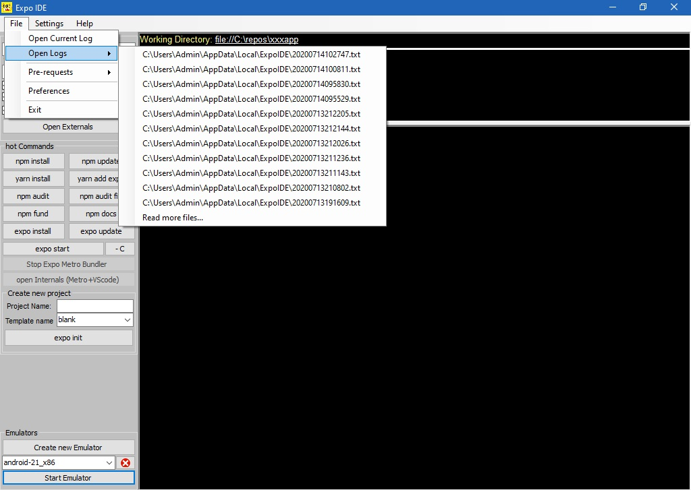
2 Pre-Requests Software's:
A list of the installed pre-requests software's with its version. In case the pre-request is not installed a "Not installed" title will be shown in the menu item. Clicking on "not installed" menu item will install the clicked item for that software.
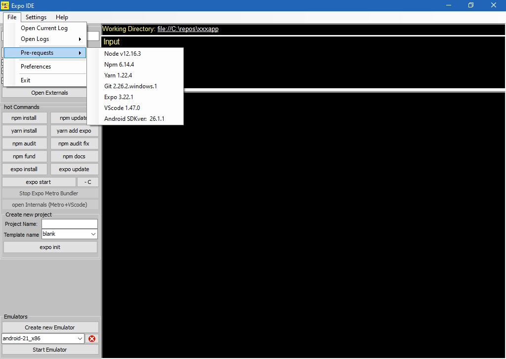
3 Preferences and Settings:
For fast changing user can change checkbox's status from settings menu. Other way to change settings is by opening preferences from file menu.
When enabled:
· Run Metro Bundler Internally: It will run inside the Expo IDE.
· Run VS code Internally: It will run inside the Expo IDE.
· Auto size VS code to fit window size: Maximize VS code inside Expo IDE.
· Log My Sessions: User input/output activities will be saved.
· Allow adding typed commands to autocomplete suggestions list: Automatically add new commands to auto complete suggestions.
VS Code Exe Location: If Expo IDE couldn't find the visual studio code location you can add it here.
Autocomplete suggestions list: Edit IntelliSense (code-completion) suggestions list.
Is Webview2 Installed?: By default this value is set to unknown. If you are sure that Microsoft Edge Webview2 is installed properly set this value to yes, or better set it to unknown and the system will check before setting it to yes. DON'T SET IT TO YES WITHOUT INSTALLING WEBVIEW2. More information is here.
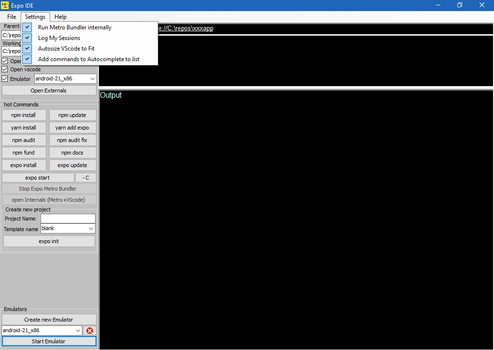
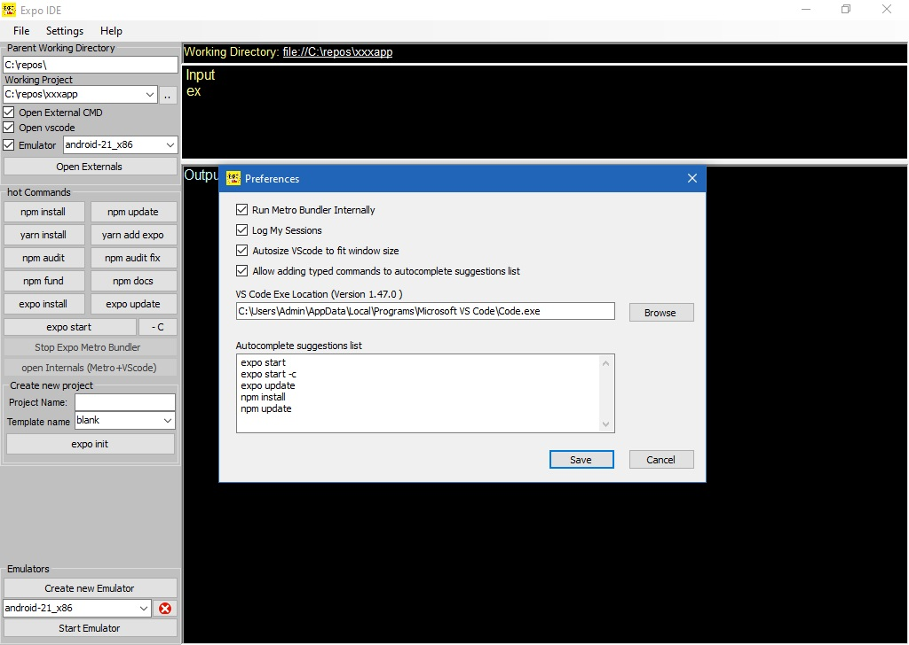
4 Working Directories:
The application will remember last working project and the parent directory.
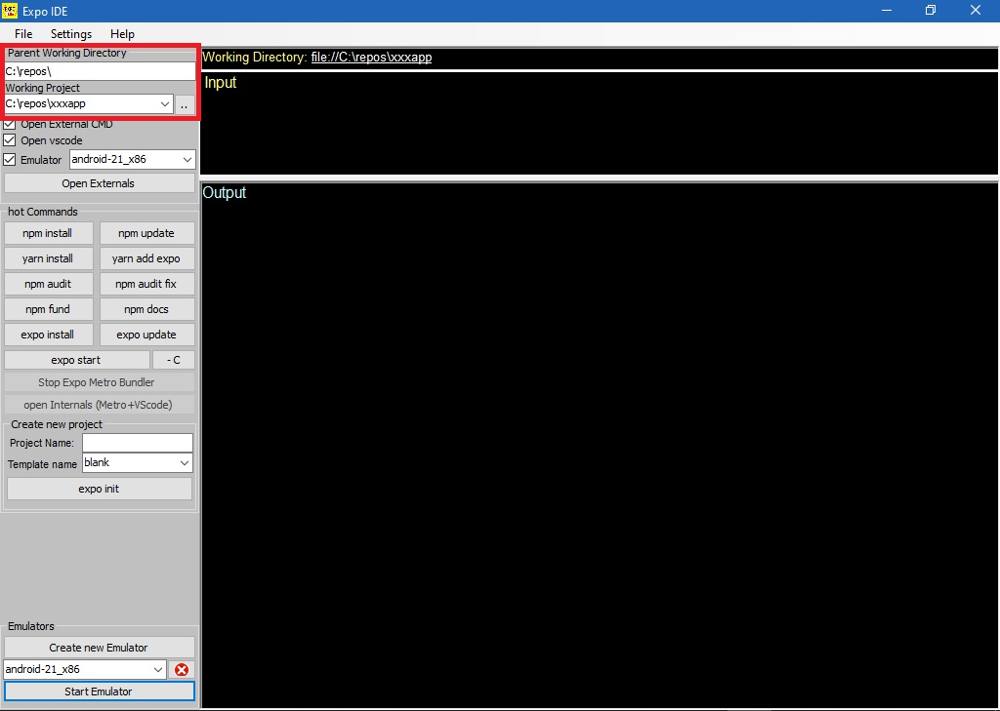
5 Externals Software's:
To open CMD, VS code and selected Emulator.
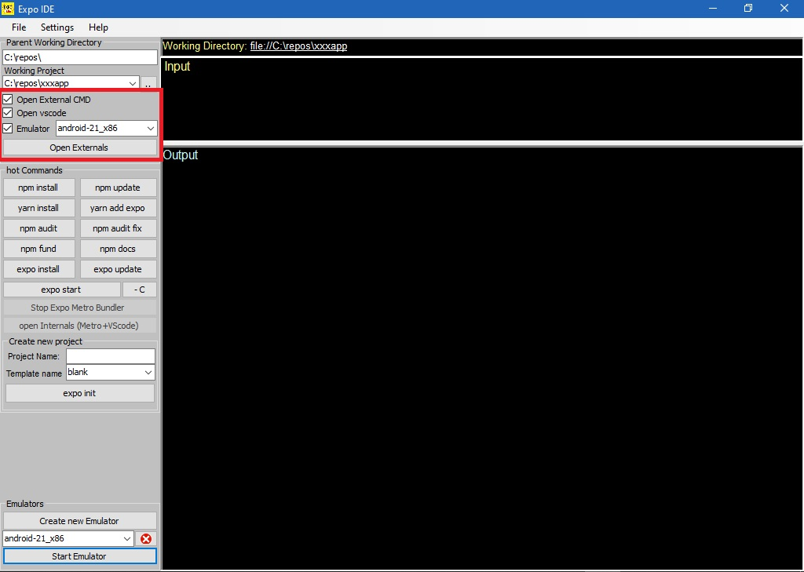
6 Regular Hot command's:
A collection of regular commands executed by these buttons.
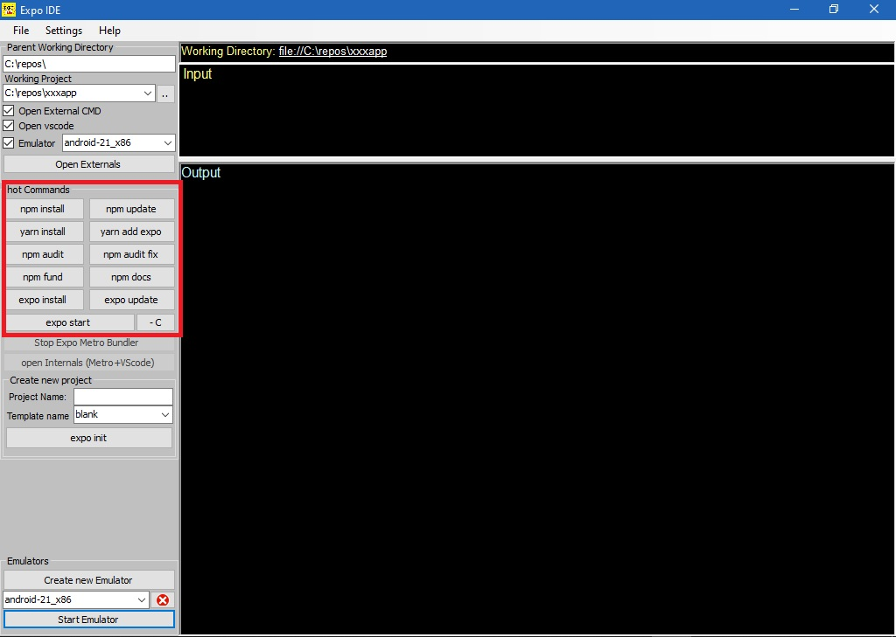
7 Create New Projects:
To initiate new project with the required template.
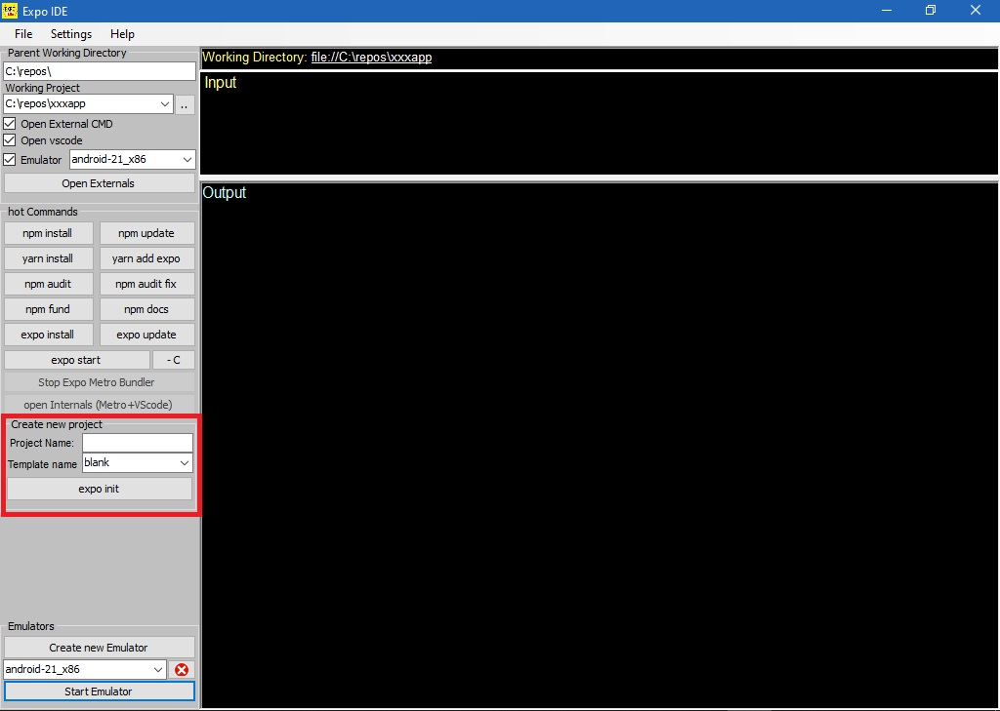
8 open Metro and VS code Internally:
After successful expo start you can open Metro Bundler and visual studio code internally.
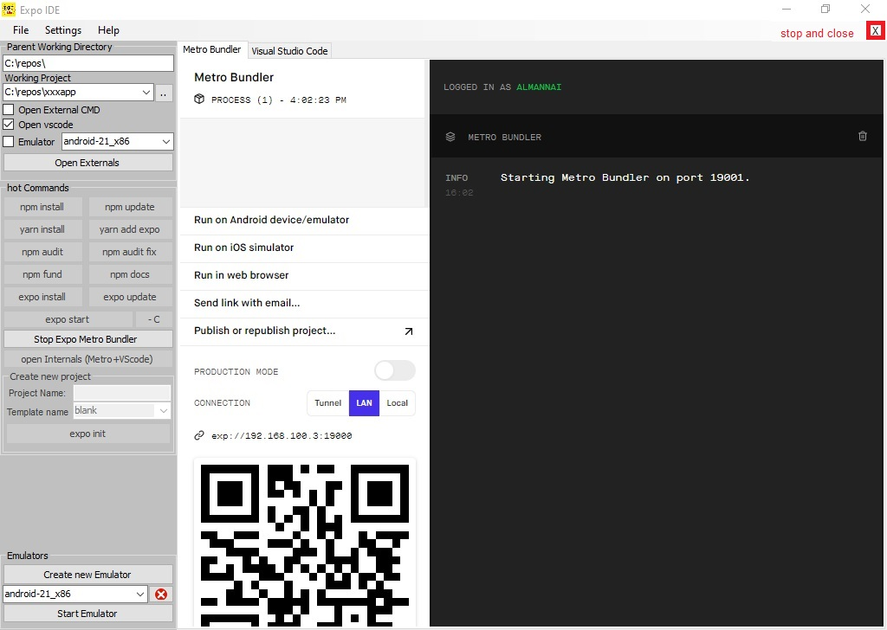
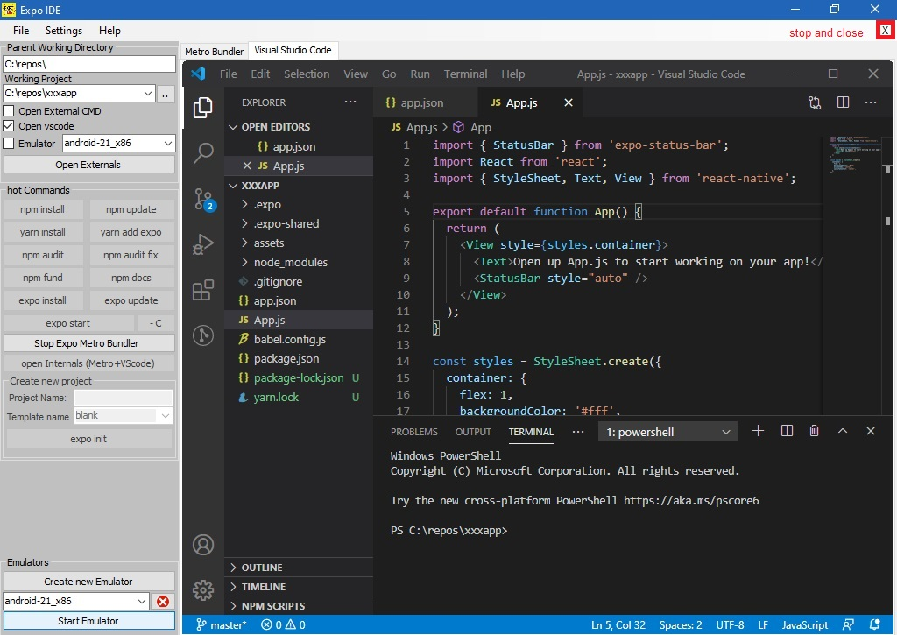
9 Create Emulator's:
To create or start Emulator's. The opened dialog will list all available (installed) emulators system images. To create an emulator, select required image give the emulator a name and hit Create button.
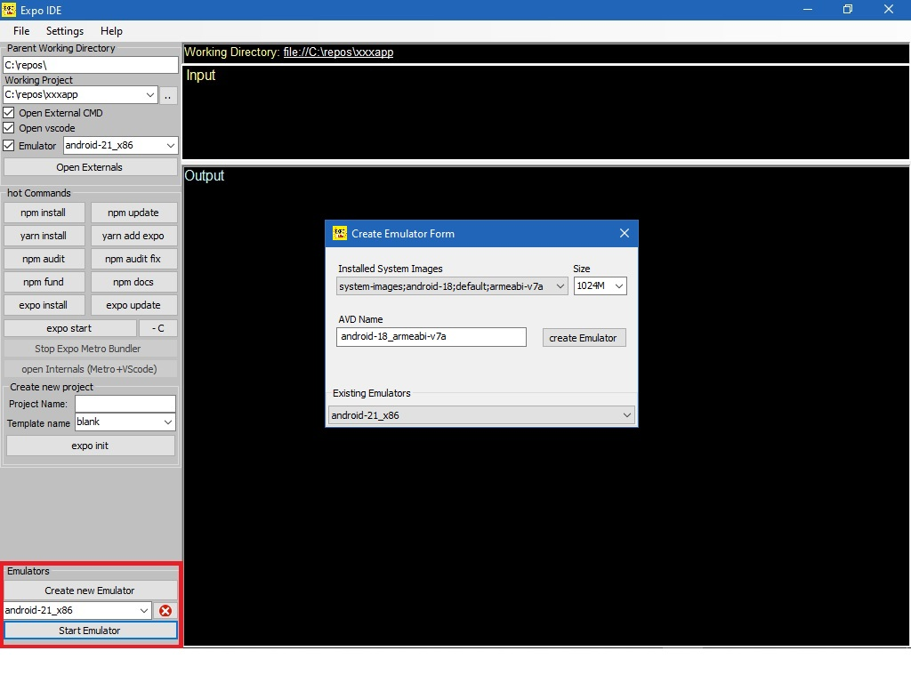
10 IntelliSense (code-completion) auto complete:
Auto complete entered commands while typing the input text box. It is also clever enough to remember the new entered commands after successful execution.
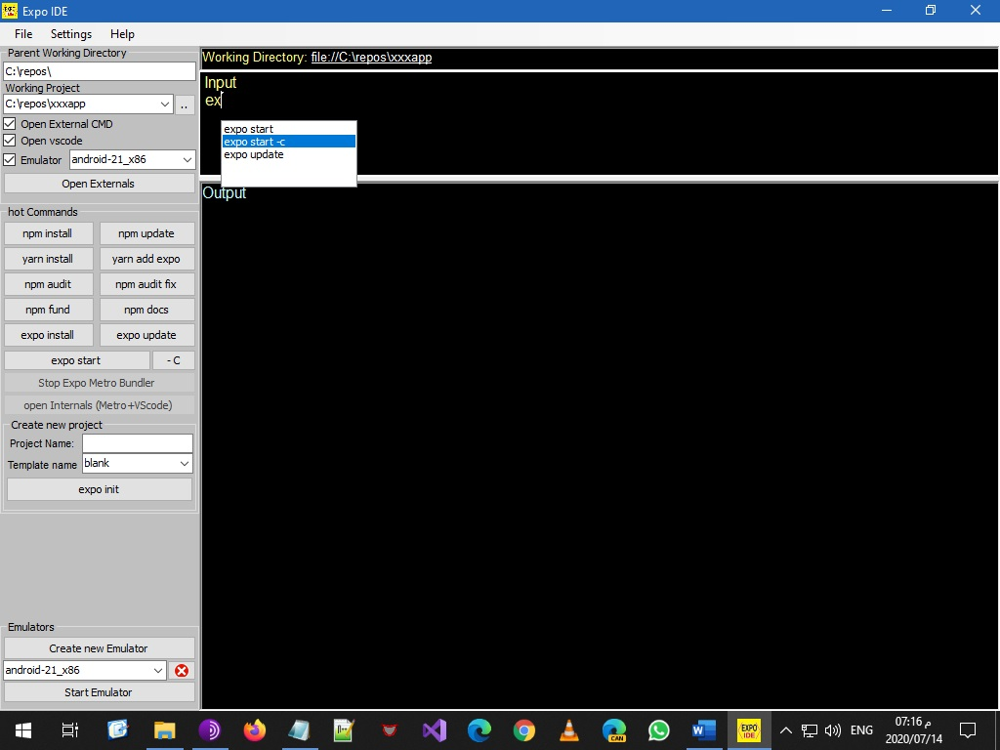
To see Expo IDE in action please watch the following video for the old version 1.0.x.x.
Expo IDE Video